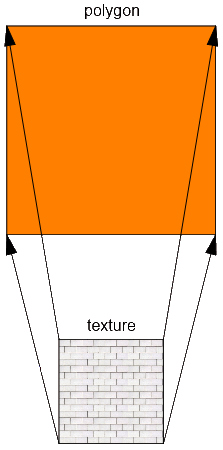
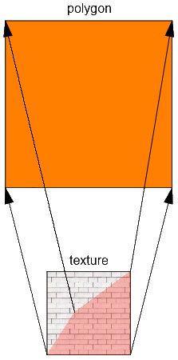
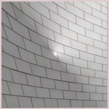
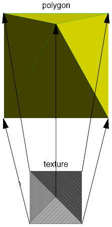
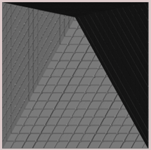

This document provides guidance to GDL developers in creating objects, describes the details of how library parts work in Archicad beyond the GDL language, and shows practices to achieve a seamless user experience.
Most GDL Library Objects are saved with the *.gsm extension and they are distinguished by their subtype in Archicad. There is a special extension, *.gdl (GDL Script Files) for the MASTER_GDL/MASTEREND_GDL files. Archicad handles any GDL Script File starting with the string "MASTER_GDL..." or "MASTEREND_GDL..." in their file name in a special way. These files can be used to load attribute definitions, define line types, materials, etc. (more information in The GDL Script Analysis).
The ID consists of two parts, each 36 characters long. The first 36 characters represent the Main ID and the last 36 characters represent the Revision ID.
The Main ID is created when the library part is saved for the first time. It is also modified if the library part is resaved using the "Save as" command.
The Revision ID is also created when the library part is saved for the first time but it is modified if the library part is resaved using the "Save" command. Using the LP_XMLConverter tool a compilation will change the Revision ID and leave the Main ID untouched, of course.
This means that Main ID identifies a library part in its function and the Revision ID helps in distinguishing the revisions of the object. Let's see this in practice.
When placing an object in Archicad, the program stores the reference by the ID and considers the name only for objects without an ID (library parts saved before Archicad 8 and .gdl files). In the case of Library Parts coming from versions earlier than Archicad 8, there was no such thing as a GUID. So when such a Library Part is encountered in the file, Archicad will fill out its ID with zeros.
When loading a library, Archicad uses the following hierarchical criteria for matching loaded library parts to objects already placed in the project:
In case the stored ID is valid:
Archicad tries to get an exact match of both parts of the ID
Failing that, Archicad tries to match the first part of the ID, which is the Main ID.
In case it does not find one matching, it starts to check other elements' Migration Table values to find a substitute.
Finally, when loading files saved before Archicad 12, Archicad tries to match by library part name.
In case the stored ID is zero, the identification procedure tries to match by name only.
The same process is executed when looking for macros in a placed element as every library part contains a lookup table for its called macros' GUIDs. Naturally, when saving an object containing macro calls, this table is collected using a name-based search in the currently loaded library.
You can use Insert own GUID in the Edit menu when the Library Part Editor window is active. Alternatively, you can check the Subtype Hierarchy dialog window. In this dialog, you can see the subtype hierarchy of the currently loaded library in a tree view. The main attributes - name, version, ID, file location, flags indicating if the object is template or placeable - of the selected library part are displayed at the bottom of the window.
This dialog appears in 2 contexts:
Open Object by Subtype... (on Edit GDL Library Parts toolbar)
Place All Objects (in the Library Developer menu)
Naturally, you can read the ID in the HSF or XML format of the library part. To get these, use the LP_XMLConverter tool.
The most important principle is that the Main ID represents a constant functionality to the users of the library. This means that if you publish a new library part using a Main ID that is already in use by an old library part when loading an old project with the new library, the old placed elements will be replaced by the new object. This contradicts the users' expectations, such as there will be no change in the object's parameters, and their functions. If you want to change the name or the function of old parameters, generate a new Main ID and use migration scripts to avoid ambiguity and unexpected data loss. Make sure that this new Main ID is unique - not identical to any other ID in the library.
Note, that renaming an object will not make it incompatible with its past self for Archicad as long as their MainIDs remain identical. Similarly, giving the name of an existing library part to a new one (with a new ID) will not make them compatible.
It is possible to maintain a link between the old and the new, updated version (with a new Main ID) of a library part by using migration scripts (forward migration script, backward migration script) and a migration table.
In these scripts, you can define which library part substitutes which (by connecting the old and new Main ID-s), and how to update the new object's parameter values based on the old one (or vice versa). You can set rules for the migration to happen only under certain parametric conditions. If the subject of the migration meets these, the upgrade or downgrade is possible, otherwise it will not be an option.
Generally, it is possible for the subject of the migration to have one or more successors (or ancestors in backward migration) depending on parameter settings. The case is a little different when migrating Zone Stamps, though. One type of Zone Stamp can be linked to many Zone Categories. But each category can use only one kind of Zone Stamp. When migrating a Zone Stamp, the Category stays the same. If the route of migration diverges ("Zone Old" is upgraded to "Zone New 1", or to "Zone New 2", depending on different parameter settings), it is possible to get a Category with two different Stamps linked. While this is a valid result regarding the migration process, it is an inconsistent situation for Archicad. Make sure you only migrate Zone Stamps in a direct way, to avoid this.
Like any other programming language, GDL has a syntax and logic to be followed. If there is a mistake in syntax, the programmer gets an error message. If there is something confusing, or some unexpected thing happens when running the script, a GDL warning is sent out.
You can choose WHERE you want to send these messages in Options/Work Environment/Model Rebuild Options:
Interrupt with error messages: a dialog pops up at every problem
Write Report: the message is written in the Report window
You can choose WHAT you want to send out as message: this setting is available in the Library Developer menu, called "Check Library Part Scripts for Warnings". When enabled, not only errors, but warnings get reported as well according to the WHERE settings.
You can also choose WHEN you want to see warning messages. This can be set in the Library Developer menu as well, called "Always Send GDL Messages". Turning this feature on, each time GDL is executed, warnings, errors and print messages get reported. Leaving it off, errors and warnings are only reported at script check/save object, print messages are only shown for object previews.
Note, that using some combinations of the above switches can result in difficulties: for example, having the "Always Send GDL Messages" and the "Interrupt with error messages" enabled together may prevent the execution of something as "simple" as moving an editable hotspot, popping up dialogs all the time.
Pressing "Check script" in the library part editor, if there is a problem with your script using the current parameter settings,
you will always get a warning or error message popup window.
Using the PRINT command, or the GDL debugger may help a lot locating mistakes hard to find otherwise.
Note that the line numbers in the GDL warnings refer to the script which contains the problem.
Parsing errors must be handled with extra care. These denote the first line in which the parsing gets impossible but the actual problems may be some lines before.
Example
The interpreter detects the missing statement first at the
endif and stops there;
though the problem is obviously around line 4 where an
endif is really missing.
if condition1 then
if condition2 then
! do something
! do something - BUT WE MISSED AN 'endif'
else
! a potentially long code block
endif
Here are some examples of the latest warning messages developed, with some explanation:
| Warning message | Possible explanation |
| Simple parameter redeclared as an array | specifying a simple parameter in an object and using it as an array in the called macro |
| Undefined parentId "id" used in UI_PAGE definition | missing parent ID in tabpage hierarchy |
| View/Project dependent global "globalName" used in parameter script | see the section called “Global Variables” |
| Request "requestName" used in parameter script | see the section called “REQUEST Options” |
| Application query "applicationQueryName" used in parameter script | see the section called “Application Query Options” |
| Possibly unwanted parameter type change | a parameter receives a value not supported by its original type |
In Archicad the hotspot/hotline/hotarc identification is introduced to support associative dimensioning in section. Via this feature a dimensioning item can refer to any of a GDL object's hotspots/hotlines. It will become an important issue when the number of hotspots/hotlines changes between the object's different parameterization states.
If the programmer does not specify hotspot/hotline/hotarc IDs - or if he sets them to 0 - Archicad will assign continuously increasing ordinal numbers. This solution is correct for static objects but causes dimensioning problems when some hotspots/hotlines appear or hide between parameter set-ups. Namely, the IDs will be rearranged so they will change, and the associative dimensioning items - in section - will go astray.
Since Archicad 8 release you can use editable hotspots in your library parts. The feature is described in Chapter 6, Graphical Editing Using Hotspots except for one possibility.
In some cases you may want to display a different parameter from the edited one. See the example code below:
We want to have the size of a shoe in meters and in shoe sizes, too.
For that we create two parameters and connect them in the parameter script.
Naturally, the type of the explaining parameter can be different (e.g. text).
We emphasize that the edited parameter is footLength
all the way, footSizeEU - the displayed parameter -
must be updated via the parameter script.
2D editing
Parameter script
dim _lengthValues[10]
dim _sizeValues[10]
for i = 1 to 10
_sizeValues[i] = i + 35
_lengthValues[i] = (i + 35) * 0.007
next i
values "footLength" _lengthValues
values "footSizeEU" _sizeValues
if GLOB_MODPAR_NAME = "footLength" then
parameters footSizeEU = round_int(footLength / 0.007)
else
if GLOB_MODPAR_NAME = "footSizeEU" | GLOB_MODPAR_NAME = "" then
parameters footLength = footSizeEU * 0.007
endif
endif
2D script
rect2 0, 0, footLength * 0.4, footLength ! or a more realistic shoe model
hotspot2 0, 0, 1, footLength, 1 + 256, footSizeEU
hotspot2 0, footLength, 2, footLength, 2, footSizeEU
hotspot2 0, -0.1, 3, footLength, 3
Archicad lets the GDL object know about the context it is being displayed or used in. The next global variables are used for this purpose:
GLOB_VIEW_TYPE to determine the active view
GLOB_PREVIEW_MODE to determine the active preview
GLOB_FEEDBACK_MODE for editing context indication
GLOB_SEO_TOOL_MODE for solid element operations context indication
For the possible values refer the section called “General environment information” and the following list:
GLOB_VIEW_TYPE = 2 - 2D, floor plan
The model is displayed in the standard 2D floor plan.
In a 3D script this means that the model is projected to 2D
via the project2 command.
This is the main use of an object - this 2D model must be always correct and efficient.
If GLOB_FEEDBACK_MODE = 1 then
the model is displayed via feedback lines on the 2D floor plan
during the hotspot editing of the object.
This model is drawn many times in a single second throughout the
user interaction. This implies that the model should represent
the essential parts of the object only.
Note, that texts (generated by text2 command)
are not refreshed in feedback mode - since it would slow down the output.
GLOB_VIEW_TYPE = 3 - 3D view
The 3D model is displayed in the standard 3D model window or it is the source of photorealistic rendering. This view should omit internal details of the object, since these cannot be seen anyway. This is the second most important use of an object - the 3D model must be always correct and efficient. This target type demands correct outside look.
If GLOB_FEEDBACK_MODE = 1 then the 3D model is displayed via feedback lines in the 3D model window during the hotspot editing of the object. This model is drawn many times in a single second throughout the user interaction. This implies that the model should represent the essential and visible parts of the object only.
GLOB_VIEW_TYPE = 4 - section or GLOB_VIEW_TYPE = 5 - elevation
The 3D model is displayed in a section/elevation window. For these views, the object should generate internal details which are unnecessary for every other view type.
If GLOB_FEEDBACK_MODE = 1 then the 3D model is displayed via feedback lines in a section/elevation window during the hotspot editing of the object. This model is drawn many times in a single second throughout the user interaction. This implies that the model should represent the essential and visible parts of the object only.
GLOB_VIEW_TYPE = 6 - 3D document
The 3D model is displayed in an axonometric window as a drawing. This is used for documentation, dimensioning in 3D.
GLOB_VIEW_TYPE = 7 - detail drawing
The model is used in a detailed drawing window. The model can be more detailed than in other views consequently. The 2D and 3D models are not distinguished - that information can be derived from the script type.
GLOB_VIEW_TYPE = 8 - layout
The model is used in a layout window, with its print display. The model should show its printing look. The 2D and 3D models are not distinguished - that information can be derived from the script type.
If GLOB_FEEDBACK_MODE = 1 then the model is displayed via feedback lines in a layout window during the hotspot editing of the object. This model is drawn many times in a single second throughout the user interaction. This implies that the model should represent the essential and visible parts of the object only.
GLOB_VIEW_TYPE = 9 - calculation and/or GLOB_PREVIEW_MODE = 2 - listing
The 3D model is used for surface and volume calculation by the listing engine. This context is the proper place to do some model alterations for listing. E.g. you can generate extra bodies to raise the surface to be painted and the amount of required paint. Use the combination of the 2 globals for the desired result in calculation and listing model generation.
GLOB_PREVIEW_MODE = 1 - settings dialog
The model is displayed in the Object Settings Dialog's preview box. The 2D and 3D models are not distinguished - that information can be derived from the script type. The object should provide a fast, rough preview of the model considering the limited size of the preview.
GLOB_SEO_TOOL_MODE = 1 generating as an operator for Solid Element Operations
The generated 3D model is used as a parameter for solid (CSG) operations. This can be useful, when the object's space demand is larger than the object itself. E.g. when you subtract a stair from a slab, you'd expect that the stair cuts a hole for the walking people, too. To achieve this, in this context the stair should generate a model containing that walking space.
There are two directions of parameter value flow between Archicad and the library part. The first direction means that the Archicad informs the library part about an attribute of its context (e.g. the drawing scale of the project or the thickness of the wall a window is placed into). The second direction is when the library part asserts something about itself which instructs Archicad to change that something in the direct context of the object (e.g. the depth a wall end cuts in the wall).
There are 3 channels of information coming from Archicad: global variables, parameters with predefined names and directly called values.
Global variables are filled by Archicad according to the current project settings and to the placement context of the object. Note, that not all globals are filled in every context and view.
For the complete list of global variables and their relevant restrictions in certain scripts, consult the section called “Global Variables”.
The newer method of Archicad for providing information is the method of fixed named optional parameters. If a given library part has a parameter with a name and type matching any optional parameter, Archicad sets its value according to its function.
Refer paramaters set by Archicad in the section called “Fix named optional parameters” to learn the Archicad defined library part parameters.
For rarely used, special information, library parts use Request calls or Application Queries in their scripts. Unlike global variables, these only give a return value when the containing actual scripts runs. Note, that most requests and queries should be avoided in a parameter script, or a master script run as a parameter script. If used in those scripts, the validity of the returned value or the function can not be guaranteed.
Refer the section called “REQUEST Options” and the section called “Application Query Options” to learn more about options, parameter script compatibility and syntax.
Archicad needs certain informations to use the library parts correctly. These informations depend on the function and the context, and are stored in the built-in Archicad subtypes as parameters with predefined name and function. In addition to built-in Archicad subtypes some functions might need fixed named optional parameters.
Consult the fix parameters of built-in subtypes and paramaters read by Archicad in the section called “Fix named optional parameters” to get a view of the possibilities.
The display of library parts in the plan may depend on the current view.
The view's internal settings are available via GDL global variables (e.g. GLOB_SCALE, GLOB_STRUCTURE_DISPLAY) and
request options (e.g. "WINDOW_SHOW_DIM", "DOOR_SHOW_DIM", "FLOOR_PLAN_OPTION", "VIEW_ROTANGLE").
From Archicad 13 on, you can define view options from your library. These options are stored into each view and they are returned accordingly.
The following properties/parameters/options should be stored in view dependent library globals:
showing/hiding opening lines
showing/hiding minimal spaces
pen and other view attributes which shouldn't be changed individually for the sake of uniformity (e.g. minimal spaces)
showing/hiding specific accessory elements (e.g. knobs, handles)
setting 2D symbol types for object groups
Things which should NOT be stored in view dependent library globals: general values for the whole project, general values for the whole country, values which may be required to be set individually for objects.
To insert a tab page into the MVO dialog, you have to make a library part which is derived from the Library Global Settings (GUID: {709CC5CC-6817-4C56-A74B-BED99DDB5FFA}) subtype. This object must contain the desired global options as parameters and it must have a user interface definition for the tab page. The width of the UI should be set to match the minimum width of the panels (currently 680 px). The height of the UI is freely definable. It may have a parameter script for connecting parameters or user interface elements.
The LIBRARYGLOBAL command can be used in your placeable elements to query
values of your own library global settings object depending on the current view settings.
The 2D script is executed when a 2D model is generated:
2D plan
2D editing feedback
2D preview in the Object Settings dialog window
Layout drawing
Layout drawing feedback
Mind that most of the architectural design is done in 2D, so usually this model is the most important. Users' requirements are an exact look, fast generation time, and proper function when editing via hotspots.
From Archicad 9 on you have the possibility to choose from several main categories of lines and fills from GDL. Lines and polygon segments can be defined as contour, inner or general; fills can be defined cut, cover or drafting. These categories are described in the Archicad user documentation, let's see how we use them in GDL objects.
Setting the correct properties for lines and fills will enable you to eliminate the display-option dependence from your scripts. Formerly, you had to add a condition for drawing of some inner lines according to the set display option. Now you should define an inner line for that purpose and Archicad will display it or not as implied by the display options.
Let's see the extract of the 2D script of a window to summarize the definition cases:
! ------------------------------------------------------------------------------ ! Sill ! ------------------------------------------------------------------------------ line_property 0 ! general lines ! the sill is seen from above -> cover fill poly2_b{2} 4, 1 + 2 * (gs_fillSillCover > 0) + 4 + 64, ... ... ! ------------------------------------------------------------------------------ ! Wall segment / Cavity Closure ! ------------------------------------------------------------------------------ line_property 1 ! inner lines line2 ... ... line_property 2 ! wall contours line2 ... ... ! wall segment is seen cut -> cut fill poly2_b{2} 4, 2 + 4 + 8 + 16 + 32, ... ! ------------------------------------------------------------------------------ ! Window Frame ! ------------------------------------------------------------------------------ line_property 0 ! general lines ! side window frame is seen cut -> cut fill poly2_b{2} 4, 1 + 2 * (gs_fillFrames > 0) + 4 + 32, ... ...
The 3D script is executed each time a 3D model is generated:
3D window (wire, hidden line, solid model)
2D plan when
project2is used to project the 3D model to 2D2D section - mind the details
3D editing feedback - optimize for speed
Operator for solid operations in 3D - ask the designer for the desired functionality
Surface and volume calculation for Listing
3D preview in the Object Settings dialog window
Layout drawing when
project2is used to project the 3D model to 2DLayout drawing feedback
Try to avoid using binary format in order to make objects modifiable.
Use status codes to control the visibility of the objects in hidden line views. Make the contour lines of curved surfaces visible. Hide unnecessary lines when it is possible.
Define editable hotspots instead of fix ones whenever possible.
Always check if texture mapping is applied correctly on your objects.
If the default Archicad texture mapping process does not produce a good result,
use the COOR{3} command to set the correct method.
When using different texture mapping modes, you should take care of correct axis definitions
with VERT, TEVE and COOR{3} commands. The node order is shown below.
You can distort the textures by setting different distances between the
nodes defined by the VERT or TEVE commands.
Take care that working with different rendering engines can produce slightly different results, see the examples.
Internal engine:
C4D engine:
Correct texture mapping on complicated surfaces or distorted textures can be modeled
with COOR and TEVE commands. In this way you can make surface models only.
In Archicad, there is no direct texture specification. You can define a texture as a part of a material definition.
This texture is used in Rendering Engines and in OpenGL - but in OpenGL we have only limited implementation of our full texture mapping,
and no texture (fill) mapping in our Internal 3D Engine at all.
So with TEVE command you can map a planar texture point (u,v) to a spatial geometric point (x, y, z):
(x, y, z) is measured in meters in the local coordinate system, as usual
(u, v) is measured in units in the infinite texture space. One unit is as long as the texture extent in that direction.
You can give a negative or more than one value for either u or v.
See the example 1:
Table 12.1. Teve example 1: mapping with no distortion
| Program | Logic | Result |
|---|---|---|
base
teve 0, 0, 1, 0, 0
teve 2, 0, 1, 1, 0
teve 0, 2, 1, 0, 1
teve 2, 2, 1, 1, 1
teve 0, 0, 1, 1, 1
edge 1, 2, -1, -1, 0
edge 2, 4, -1, -1, 0
edge 4, 3, -1, -1, 0
edge 3, 1, -1, -1, 0
set material 92
pgon 4, 0, 0, 1, 2, 3, 4
coor 1024, 1, 2, 3, -5
body -1
|

|
 |
If you make a non-regular mapping, the Rendering engine will fit the shape in texture space to the shape in model space:
Table 12.2. Teve example 1: mapping with distortion
| Program | Logic | Result |
|---|---|---|
base
teve 0, 0, 1, 0, 0
teve 2, 0, 1, 1, 0
teve 0, 2, 1, 0.3, 0.5
teve 2, 2, 1, 1, 1
teve 0, 0, 1, 1, 1
edge 1, 2, -1, -1, 0
edge 2, 4, -1, -1, 0
edge 4, 3, -1, -1, 0
edge 3, 1, -1, -1, 0
set material 92
pgon 4, 0, 0, 1, 2, 3, 4
coor 1024, 1, 2, 3, -5
body -1
|

|

|
The same is true for real 3D bodies, as you can see in this example:
Table 12.3. Teve example 1: mapping with distortion on a pyramid
| Program | Logic | Result |
|---|---|---|
base
teve 0, 0, 1, 0, 0 ! 1
teve 2, 0, 1, 2, 0 ! 2
teve 2, 2, 1, 2, 2 ! 3
teve 2, 2, 1, 0, 2 ! 4
teve 1, 1, 3, 1, 1 ! 5
edge 1, 2, -1, -1, 0
edge 2, 4, -1, -1, 0
edge 4, 3, -1, -1, 0
edge 3, 1, -1, -1, 0
set material 92
pgon 3, 0, 0, 1, 6, -5
coor 1024, -6, -7, -8, -9
body -1
|

|

|
Please note, that you can assign only one texture vertex for a model vertex. It is not possible to assign the texture vertices on a per polygon basis. It is sometimes an advantage and sometimes a disadvantage.
When you place a picture in a 3D model using the PICTURE command,
a polygon will be created using the picture as a face.
The material of the polygon affects the result of the rendering.
With this in mind you should use a matte surface -
the color may be chosen depending on the picture.
define material "pictmat" 2,
1, 1, 1 ! RGB
material "pictmat"
picture "filename", a, b, _mask
The first picture shows a picture on a shiny surface - the undesired side-effect can be observed. In the second picture you can see a texture on a precisely set material - the wanted result.
For transparent images - like the tree above - you should consider a more precise definition of the base material. See the following example.
define material "pictmat" 0,
1, 1, 1, ! RGB
0.5, 0.8, 0, 0,
0, 0,
0, 0, 0,
0, 0, 0,
0
material "pictmat"
picture "filename", a, b, _mask
Group operations bring the power of solid operations into GDL. On the other hand they present a risk factor when misused.
An important point is that you mustn't place a group inside another one. In such situations you should define a new group like in the source snippet below:
_subtractionResult = subgroup ("Operand1", "Operand2")The parameter script is run in the following cases:
Opening the Object Settings dialog window
Changing the active library part in the Info Box (selecting/deselecting one)
Changing a parameter's value in the Object Settings dialog window or Info Box
Changing a parameter's value using editable hotspots (even while generating the feedback)
There is a change in the globals/requests/libraryglobals which the library part uses in the parameter script
Stretching the object using conventional hotspots
Loading step-by-step migration libraries (starting from AC18)
The parameter script MAY be run on:
Dragging the object, in case the object refers to SYMB_POS_X/SYMB_POS_Y
Update Zones runs the parameter script of the affected zones if necessary
The parameter script is NOT run on:
Rebuild
Changing scale
Changing story
Editing multiple selection may result unintended parameter values.
GLOB_MODPAR_NAME is empty in the objects that are not directly edited.
Even if the user changed the parameter specified in an if GLOB_MODPAR_NAME condition,
the else branch will be evaluated, meaning it can be overwritten in the indirectly edited object.
There is a similar issue with different VALUES ranges.
Note that the parameter script may be run multiple times on a single user interaction. The reason for this is that the parameter script can change the value of parameters and this requires the parameter script to be run again, and so on. Therefore it makes no sense to increase a parameter value by one in the parameter script since you may not be able to predict the cardinality of executions.
The run of the parameter script is linear, and not necessarily multiple. You can force the parameter script to start only once by checking the Run the parameter script only once option in the object's Compatibility Options panel, if you are sure you do not need it to run many times. This can make objects react faster, saving time and computing resources.
You can define relations between parameters using the GLOB_MODPAR_NAME
value (containing the name of the last modified parameter).
For example you can make a circle object for which
both the radius and the diameter can be set
(maybe one of them via the parameter list and the other via editable hotspots).
Do not use this possibility to define the valid range of parameters -
use VALUES command instead.
The User Interface script is displayed in only one context: the user interface tab page in the Object Settings dialog window.
The script is run on the initialization of the dialog window and after each user interaction and parameter change.
If you want the Custom Settings page to appear in the topmost UI selector as default instead of the parameter list, push the Set as Default button (or add the "STBit_UIDefault" bit to the "StatBits" section of the XML). Otherwise the parameter list will be the starting tab. For Hierarchical pages, push the Hierarchical Pages button in the GDL Editor/UI window (or add the "STBit_UIUseHierarchicalPages" bit to the "StatBits" section of the XML).
When styling texts, note that extra small letters cannot get any style but plain. In addition, Outline and Shadow styles have no effect on Windows platform.
Note that Archicad tries to match the fonts used in dialogs with the operating systems. When scripting graphical user interfaces on Windows, leave more space around texts otherwise Mac users will see truncated texts.
If you use the UI_INFIELD command to define a
thumbnail view field for value lists, be aware of the following.
There should be equal sized thumbnails for all parameter values
(including empty value).
Thumbnails have to be the same size at which they will be displayed
otherwise Archicad will distort them.
We advise you to use Archicad's figure tool for assembling
the thumbnails into one picture file.
A user interface picture used by only one object should be integrated in the library part file itself. This can be done using the LP_XMLConverter tool.
When using an external image referred to by its file name, do not omit the file extension. This way, you will avoid errors stemming from pictures and objects having the same name.
Keep all pictures used by interface scripts in the Macros folder,
or embedded in the object itself. Using external images:
add the FILE_DEPENDENCE command to make sure they are saved in archive format with the object.
Starting from Archicad 18, a new hierarchical paging option is available for tabpage selection.
This is accessed via the UI_PAGE command, by adding some extra parameters,
and setting the Hierarchical Pages parameter in the object itself.
Doing so, a separate popup tabpage control will appear above the custom UI field.
The order and hierarchy of the available pages can be defined by the ID of the pages. Root ID is always -1.
The possibility to set up an "oldschool" tabpage selector within the UI page still remains available.
Let's see an example script:
! Master Script
! TabIDs
TABID_ROOT = -1
TABID_PAGE_1 = 50
TABID_PAGE_2 = 60
dict _tabs : i = 1
_tabs.id[i] = TABID_PAGE_1 : _tabs.title[i] = _(`PageName1`)
_tabs.sub[i] = "DrawPageTitle1"
_tabs.parent[i] = TABID_ROOT
_tabs.icon[i] = "Page Icon Name1"
i = i + 1
_tabs.id[i] = TABID_PAGE_2 : _tabs.title[i] = _(`PageName2`)
_tabs.sub[i] = "DrawPageTitle2"
_tabs.parent[i] = TABID_PAGE_1
_tabs.icon[i] = "Page Icon Name2"
file_dependence "Page Icon Name1"
file_dependence "Page Icon Name2"
! Parameter Script
values "gs_ui_current_page" _tabs.id
! UI Script
ui_dialog _(`Custom Settings Title`)
ui_current_page gs_ui_current_page
for i = 1 to vardim1(_tabs.id)
ui_page _tabs.id[i], _tabs.parent[i], _tabs.title[i], _tabs.icon[i]
if gs_ui_current_page = _tabs.id[i] then gosub _tabs.sub[i]
next i
! ==============================================================================
! Call User Interface Macro's TabPages
! ==============================================================================
call "ui_customMacro" parameters all, tabs = _tabs
! ==============================================================================
end ! end ! end ! end ! end ! end ! end ! end ! end ! end ! end ! end ! end ! en
! ==============================================================================
! ==============================================================================
! UI Page Subroutines
! ==============================================================================
"DrawPageTitle1":
! UI Page 1 description
return
"DrawPageTitle2":
! UI Page 2 description
return
From Archicad 10 on, a new dynamic method is available for linking control items and value list items.
Using this method you can localize the logic of the availability of parameter values
to the parameter script - the control will adopt the set of available values.
This dynamic linking is available for UI_INFIELD{3} and UI_INFIELD{4}.
The old-style static linking is still working for static functions
(using UI_INFIELD and UI_INFIELD{2}).
The two components of the dynamic method are:
1. Define the user interface control with an option for every possible value.
The example shows a popup menu control (method = 2) which uses an index image containing 2 rows and 4 columns. The sample control supports 8 possible values.
ui_infield{3} iJunctionType, 0, 0, 200, 50,
2, 3, 8, 2,
70, 45, 70, 45,
1, _(`Junction Type A1`), 2,
2, _(`Junction Type B1`), 4,
3, _(`Junction Type C1`), 1,
4, _(`Junction Type D1`), 3,
5, _(`Junction Type A2`), 5,
6, _(`Junction Type B2`), 7,
7, _(`Junction Type C2`), 6,
8, _(`Junction Type D2`), 8
2. Set the list of available values for the parameter under the given circumstances.
if iLeftNeighbour = 1 then
values "iJunctionType" 1, 3, 4, 6
else
if iRightNeighbour = 1 then
values "iJunctionType" 2, 5, 7, 8
else
values "iJunctionType" 1, 5, 7
endif
endif
The resulting control is shown in the image below. (iLeftNeighbour = 0, iRightNeighbour = 1)
In Archicad 10 a new method has been introduced that can handle alpha-layer based transparent pictures. The following controls handle pictures with alpha layers correctly:
UI_INFIELD{3}, method = 1 (thumbnail view control)UI_INFIELD{3}, method = 2 (popup with icons and texts)UI_INFIELD{3}, method = 3 (popup with icons only)UI_INFIELD{3}, method = 4 (icon radio push button)UI_INFIELD{4}, method = 1 (thumbnail view control)UI_INFIELD{4}, method = 2 (popup with icons and texts)UI_INFIELD{4}, method = 3 (popup with icons only)UI_INFIELD{4}, method = 4 (icon radio push button)
If you use static texts (possibly in combination with the UI_STYLE command), be aware of the following.
Because of the differences of the targeted operating systems, font sizes are not the same on Windows and on Mac. As a side effect, the extra small font size is a bit larger than the small one on Windows. As a general rule, always test user interfaces on both platforms to check overlapping and clipping.
Furthermore, special styles like Bold, Italic and Underline are not allowed in combination with extra small size. Outline and Shadow are old Macintosh styles, which are no longer used.
The two pictures show the look of static texts with different sizes and styles.
On Windows:
On Mac:
The FWM script is executed when a project saved in an earlier version of Archicad is opened in a later version (starting with Archicad 15) with the updated library. This new library can be loaded manually or by using the Consolidate option in the Library Manager. If a placed instance of an object has a new, changed Main ID and a valid Forward Migration Script in the new library, it can be automatically substituted by Archicad. If the execution of the script is successful, the old element gets replaced by the new one.
This script enables the object to set the new parameters based on the old ones, without feature loss or a major change in appearance.
The first line of the script fills the FROM_GUID global variable (this contains the main ID of the original object to be migrated) into the "actualGuid" variable. You may want to use the following structure to ensure maintainability.
The rest of the script is divided into subroutine calls, one for every change of GUID. Every block must have a corresponding line in the Migration Table of the object and a block in the Backward Migration script. The latest change of Main ID always has to be the last call of this script. In every block you set the ID to start from (_startID), and the one to end up with (_endID), define the migration logic in a subroutine (for details and GDL commands, see the GDL Reference Guide), and at the end of the block you always set the new "_endID" (or set an empty ID, which means that the upgrade process will stop at the previous block's version of the object) into the "actualGuid" variable. Example:
_actualGUID = FROM_GUID
! ==============================================================================
! Subroutines
! ==============================================================================
_startID = "AAAA-AAAA-...AAA"
_endID = "BBBB-BBBB-...BBB"
gosub "migrationstep1name_FWM"
_startID = "AAAA-AAAA-...AAA"
_endID = "BBBB-BBBB-...BBB"
gosub "migrationstep2name_FWM"
! ==============================================================================
! Set Migration GUID
! ==============================================================================
setmigrationguid _actualGUID
! ==============================================================================
end ! end ! end ! end ! end ! end ! end ! end ! end ! end ! end ! end ! end ! en
! ==============================================================================
! ==============================================================================
! migrationstep1name
! ==============================================================================
"migrationstep1name_FWM":
if _actualGuid = _startID then
newParameter = oldParameter
parameters newParameter = newParameter
_actualGuid = _endID
endif
return
! ==============================================================================
! migrationstep2name
! ==============================================================================
"migrationstep2name_FWM":
if _actualGuid = _startID then
...
_actualGuid = _endID
endif
return
The BWM script is executed when a project is saved to the previous version of Archicad. If the current version of the library part has a different Main ID than its equivalent in the previous version, the migration script of the object is evaluated. As a result, the libpart will be either downgraded if possible (sometimes with some minor compromise, if it does not affect the item's main functions), or will be lost completely (in this case, it will appear as a "missing" dot sign in the earlier version project). The latter happens when a new function set introduced in the current version represents a major change compared to the previous version.
A successful backward migration process should convert the object's parameters in a way that avoids major feature loss or changes in appearance.
The first line of the script sets the continuity control variable to valid. You may want to use the following structure to ensure maintainability.
The rest of the script is divided into subroutines: one change of Main ID is one subroutine. Every subroutine must have a corresponding line in the Migration Table of the object and a corresponding subroutine in the Forward Migration script. The latest step back in changing Main ID always has to be the first subroutine of this script.
At the start of each subroutine the target GUID is checked. If not empty, the script runs in called order. Backward migration only works for one version back, so the targetGUID only needs to be set once (except when you make a fork in the migration to separate previous-version objects).
The end of the subroutine is about setting the destination (old) ID into the "targetGuid" variable. If you set an empty ID to the variable, the downgrade process is canceled there. If the "targetGuid" matches the TO_GUID global variable (containing the main ID of the target element in the conversion), the first part of the migration process is complete.
Adding a title or a short description of the migration step for every subroutine is highly recommended. You should use the same title for the Forward Migration script pair of the subroutine.
After you have reached the desired stage of the object's devolution, you have to set the placed object's ID by using the SETMIGRATIONGUID command.
In case the migration returns an empty ID, the element is going to be missing from the project opened in the previous version.
_targetGUID = TO_GUID ! ============================================================================== ! Subroutines ! ============================================================================== gosub "migrationstep2name_BWM" gosub "migrationstep1name_BWM" ! ============================================================================== ! Set Migration GUID ! ============================================================================== setmigrationguid _targetGUID ! ============================================================================== end ! end ! end ! end ! end ! end ! end ! end ! end ! end ! end ! end ! end ! en ! ============================================================================== ! ============================================================================== ! migrationstep1name ! ============================================================================== "migrationstep1name _BWM": if _targetGUID # "" then if newParameter = 1 then oldParameter = newParameter parameters oldParameter = oldParameter else _targetGuid = "" endif endif return
! ============================================================================== ! migrationstep2name ! ============================================================================== "migrationstep2name _BWM": if _targetGUID # "" then if newParameter = 2 then _targetGuid = "" endif return
Every time you change an object's Main ID, you need to fill in the old ID into the Migration Table of the element. Each line contains a previous ID and an Archicad version number (or 0, if you change more than once between two versions). During forward migration, the program scans this list of ID-s, preselecting the elements available for the migration process. During backward migration, scanning this list the program chooses only those with a version equivalent to the previous Archicad version. Every line of this table which does not have the automigration option must have at least one corresponding subroutine in the Forward Migration script and the Backward Migration script. Automigration can be used to run the parameter script without having to write a migration script that would only unconditionally change the GUID. It is useful if the migration code would have to be copied in the parameter script too for non-migrated elements (e.g. synchronizing parameters is needed as a bugfix or because new ac_ parameters).
Try to collect frequently used functionalities into macros. Calling a macro object from many objects can reduce library size and increase long-term feature cohesion by reducing redundancy.
However avoid creating macros with small functional addition to the previous abstraction level. For example do not create a block_1x1x1 macro for the generation of a 1m x 1m x 1m block. This increases the number of macro calls needlessly and it may worsen transparency.
When you call a macro, always use the CALL keyword
and put the name of the macro between quotation marks (e.g., call "m_rail_wired").
Do not create macro calls where the macro name is a parameter
to avoid missing macros from archive files, and to support background conversion.
Be careful at using the parameter buffer. Save the content of it at be beginning of the script if you want to use it. Be sure that only the defined (return) values are in the buffer by the end of the script.
From Archicad 10 on macros can return parameters to the caller object. At the
caller's side, returned values can be collected using the returned_parameters
keyword followed by a variable list. The returned values will be stored in
these variables in the order they are returned in the called macro. The number
and the type of the variables specified in the caller and those returned in the
macro do not have to match. If there are more variables specified in the caller, they
will be set to 0 integer. Type compatibility is not checked: the type
of the variables specified in the caller will be set to the type
of the returned values. If one of the variables in the caller is a dynamic
array, all next values will be stored in it.
Note: the number of possible returned elements is limited at 32767 items.
In the macro object the END / EXIT commands
define the values that have to be returned to the caller object. See the example
below.
From Archicad 10 on after parameters all keyword you can specify
extra parameters to be passed to the macro. They will override the values coming
from the caller or parameters of the called macro left to be default. The macro
can return parameters in this case too.
Script in the caller object.
call "MyMacro" parameters all extraParam = 1
call "MyMacro" parameters returned_parameters _realWidth
call "MyMacro" parameters all extraParam = 1 returned_parameters _realWidth
call "MyMacro" parameters all returned_parameters _realWidth
Script in the macro.
_realWidth = 2
end _realWidth
Starting from Archicad 19, all calculations necessary for opening 3D related views or viewpoints will be run as background processes.
Supported viewpoints:
3D Window
Section
Elevation
Interior elevation (except when "Add bounded area" or "Detect and Fit to Zones" are enabled)
3D Document
If the background process is successful, the requested view takes only a few seconds to open. However, there may be some non thread-safe library parts or objects placed in the planfile, which can disable background calculations:
Zones
Objects including text engine operations (except set style and define style commands)
Objects using the following requests: "
CUSTOM_AUTO_LABEL", "ZONE_COLUS_AREA", "MATCHING_PROPERTIES", "ASSOCEL_PROPERTIES", "STYLE_INFO", "TEXTBLOCK_INFO", "FONTNAMES_LIST"Objects using variable named macros, requests, or non-thread safe macros.
PROJECT2command andDEFINE SYMBOL_FILLare counted as non-thread safe macro calls.
The relationship between GDL add-ons and background processing depends on the add-on itself.
Deterministic add-ons (not affecting background processing):
Polygon Operations
Property Add-on
If used in read-only mode, and with files loaded in the active library: Text or Data I/O Add-ons, XML Add-on
Non-deterministic add-ons (disabling background processing):
DateTime Add-on
FileManager Add-on
If not used in read-only mode, or not with files loaded in the active library: Text or Data I/O Add-ons, XML Add-on
The object scripts are examined statically, so the background conversion is disabled even if the obstacle function itself is not executed with the current settings of the library part. The object itself and all called macros are checked as well.
To check the loaded library parts' compatibility with background processing, use the "Check Background Update Compatibility" command of the Library Developer menu.
Though GDL objects and libraries are considered by Graphisoft as platform independent, the following difficulties occur when objects are manually moved from Windows to a Macintosh:
Windows fonts will be replaced by the default Macintosh font in objects and list templates and vice-versa.
Text type listing files (listset.txt, listkey.txt, list templates, etc.) could lose line breaks, therefore listing won't work (non-utf-8 coded texts, usually)
To avoid the above problems, save a .pla archive file of your library on the first platform, then extract it on the second. This way the non-utf-8 files will be converted correctly as well.
Starting from Archicad 21 real HDPI support is available for OS X devices. To provide this feature, scalable vector graphics (.svg) source images are used to create multi-representation .tif images, containing versions of the same graphic at different resolutions. Archicad decides at runtime which image resolution is the best for the current display device from the available set of 100%, 150%, and 200%. On Windows platform 100% is the default resolution. However, images created from .svg files have a slightly different look on Windows platform as well.
This option is only available via the LP_XMLConverter tool. The .svg source image files are automatically converted to .tif images during library conversion. Archicad cannot handle .svg images, so make sure the image name reference strings in scripts omit the .svg extension.
Always test vector images in all resolutions (the .tif images can be checked by any image editor, resolution-by-resolution) to avoid blurry images after scaling (use lines aligned to full pixels in the source .svg as much as possible. Same recommendation as for .png images.)
The syntax requirements of any .svg built-in image (where the image is compiled into the binary library part itself) in GDLPict, Picture, InfoPict .xml sections are the following:
MIME attribute is
"image/svg". In case the MIME-type and the source image extension is different, the conversion ends with a warning (MIME is "image/svg", but the image file's extension is not svg)SectionFlags attribute is
"1". This flag triggers the .tif conversion. If the image is an .svg and the flag is different, a warning is displayed during conversion (SectionFlags should be "1" in case of an svg image).
The rest of the image reference in GDLPict, Picture, InfoPict .xml sections have not changed. Make sure to get the extension of the source image right in the path.
Non-built-in (aka. external) images, which are directly referred by their name in the object scripts are handled by the LP_XMLConverter tool as well:
The .svg image should be part of the library source, but not in the folder of built-in images (xml source), outside folders containing libpartdata.xml (hsf source).
The conversion creates the .tif counterparts of the .svg source images to the exact same location. The .svg source images are also copied to the binary library to a separate folder (external images to source_svg, built-in images to <libpartname>_svg_source), to support the source to .gsm to source comparison workflow. This extra folder can be avoided by the
-excludesvgoption of the LP_XMLConverter tool.
Any kind of .svg to .tif conversion failure results in a warning or an error during library builds.
For tutorials and examples on the subject and the LP_XMLConverter tool, check out the GDL Center Tips and Tricks guides.